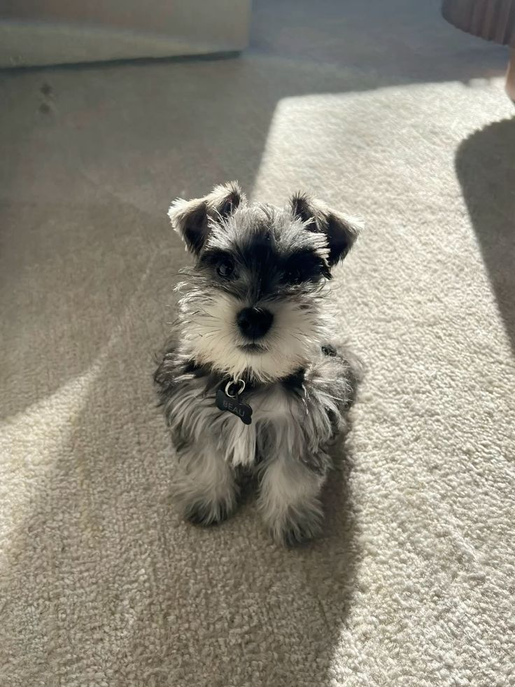
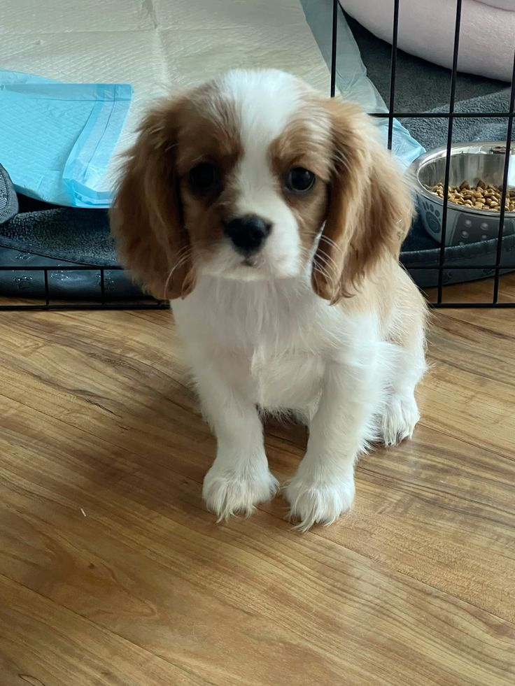
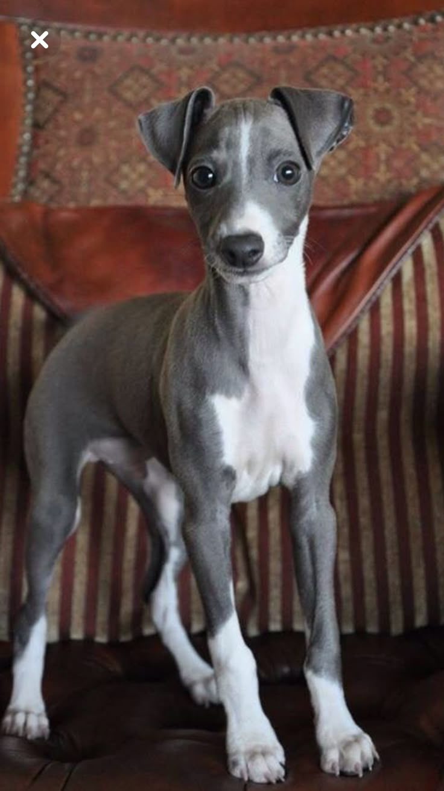

Meet the Pets
The Gentleman Giant

Name: Winston
Breed: Newfoundland Dog
Age: 6 months
Info: Winston is a gentle,
black-furred giant who believes he is a
lap dog. He follows Mei around her studio
with a calm dignity, though he often leaves
clay-dusted paw prints in his wake. His
favorite pastime is napping under Arthur's
standing desk, providing a warm footrest.
He is the undisputed, peaceful patriarch of
the group.
The Clever Shadow
Name: Gizmo
Breed: Miniature Schnauzer dog
Info: with his bushy eyebrows and mischievous eyes, Gizmo is Arthur's official coding companion. He's incredibly smart and has learned to fetch specific tools from Mei's studio by name ("Gizmo, get the ribbon tool!"). He takes his job very seriously and is always alert for the sound of a snack bag opening or a keyboard being tapped. .
The Sunbeam Supervisor

Name: Marmalade
Breed: Orange Tabby Cat
Info: Marmalade is a large, lazy, and supremely affectionate cat. His sole purpose in life is to find the perfect patch of sunlight on the concrete floor and melt into it. He supervises all household activities with half-lidded eyes and a slow-blinking gaze.
The Ninja

Name: Luna
Breed: Black bombay cat
Info: Luna is a sleek, panther-like shadow who appears and disappears without a sound. She has huge, expressive copper eyes and a talent for finding the most improbable hiding spots, often leaping out to gently pat the cats' tails as they walk by. At 3 a.m., she is an expert at parkouring across every surface in the loft..
The Joyful Ambassador
 Name: Peanut
Breed: Cavalier King charles Spaniel dog
Info:Peanut is pure, wiggling joy in a compact, chestnut-and-white package. Her sole motivation is love. She greets every guest with a wagging tail and a offered toy, and she is an expert at cuddling with anyone who looks sad or stressed. She is the glue that holds the entire furry family together with her sweet nature..
The Quirky Acrobat
Name: Noodle
Breed: Italian Greyhound dog
Info: Noodle is a long-legged, slender goofball who is either running at top speed in a "zoomie" frenzy or burrowed under a blanket, shivering dramatically. She wears a collection of tiny sweaters that Mei makes for her. She has a hilarious, high-energy personality and is known for her dramatic sighs and ability to curl up in impossibly small spaces, truly living up to her name..